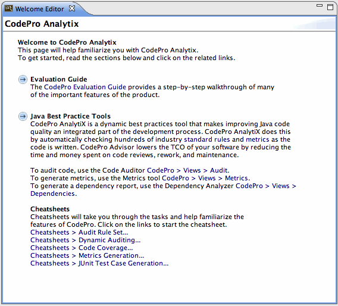
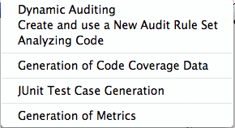
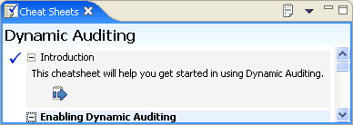
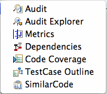
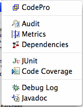

CodePro Menu
| The CodePro menu provides quick access to many CodePro features including: |
Evaluation Guide
The Evaluation Guide provides a step-by-step introduction to many of CodePro's most powerful features.
Welcome

The Welcome page provides links to many or CodePro's most popular features.
Cheat Sheets
 
The Cheat Sheets menu provides access to all of CodePro's cheat sheets.
Views

The Views menu provides quick access to all of CodePro's views. CodePro's color enhanced versions of the standard views are listed with a "+".
View Log
This menu will open up the Eclipse ".log" file in a text editor.
Clear Log
This menu will clear the Eclipse ".log" file
Explore Workspace
This menu will open up the Windows explorer (or other app configurable from the preference page) on the user's current workspace. Options are also provided to explore any resource or folder.
Preferences

The Preferences menu provides quick access to most of the CodePro preference pages.
About

The About dialog shows the product version number and build date.